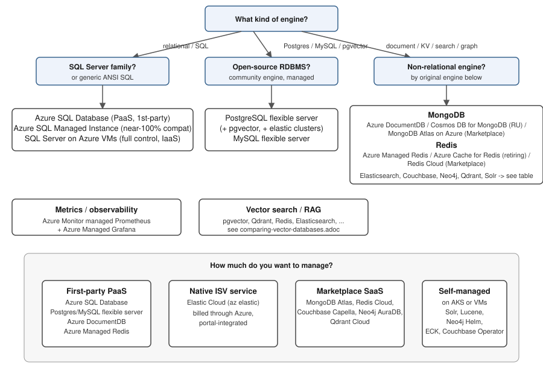

Managed Databases on Azure
|
This content was generated with the assistance of AI and should be verified against the official documentation before being relied on in production. |
This page targets Azure CLI 2.90.0 — re-verify exact command names and current GA/retirement status against the Azure CLI release notes and each linked product page before relying on them, since managed-database offerings and their names have changed more than once in the last few release cycles (Azure Cosmos DB for MongoDB vCore alone was renamed to Azure DocumentDB in late 2025). This is a landing/overview page, not a hands-on walkthrough: for setup steps and CLI examples for a given engine, follow the link in the table below to this section’s own page for it.
Engine-to-Azure-option map
For every database engine this site documents, the table below gives the corresponding Azure option(s), whether each is first-party PaaS, an Azure Native ISV Service, Marketplace SaaS, or self-managed on AKS/VMs, this section’s own page that covers it, and this site’s own engine reference for the database itself.
| Engine | Azure option(s) | Kind | This section | Engine reference |
|---|---|---|---|---|
SQL (SQL Server family / generic SQL) |
Azure SQL Database; Azure SQL Managed Instance; SQL Server on Azure VMs |
First-party PaaS (Database, Managed Instance) / IaaS (VMs) |
||
PostgreSQL / pgvector |
Azure Database for PostgreSQL flexible server (+ elastic clusters) |
First-party PaaS |
||
MySQL |
Azure Database for MySQL flexible server |
First-party PaaS |
||
MongoDB |
Azure DocumentDB (formerly Cosmos DB for MongoDB vCore); Azure Cosmos DB for MongoDB (RU); MongoDB Atlas on Azure (Marketplace) |
First-party PaaS (DocumentDB, Cosmos DB) / Marketplace SaaS (Atlas) |
||
Redis |
Azure Managed Redis; Azure Cache for Redis (retiring); Redis Cloud |
First-party PaaS (Managed Redis, Cache for Redis) / Marketplace SaaS (Redis Cloud) |
||
Elasticsearch |
Elastic Cloud (Azure Native ISV Service, |
Azure Native ISV Service / self-managed (AKS) |
||
Couchbase |
Couchbase Capella (Marketplace); Autonomous Operator on AKS |
Marketplace SaaS / self-managed (AKS) |
||
Neo4j |
Neo4j AuraDB (Marketplace); Helm chart on AKS |
Marketplace SaaS / self-managed (AKS) |
||
Qdrant |
Qdrant Cloud (Marketplace, Azure regions); Helm chart on AKS |
Marketplace SaaS / self-managed (AKS) |
||
Solr / Lucene |
Self-managed on AKS (Solr Operator) or VMs; Azure AI Search as the managed alternative |
Self-managed (AKS/VMs) / first-party PaaS (AI Search, as an alternative rather than a hosted Solr/Lucene) |
||
Prometheus |
Azure Monitor managed service for Prometheus + Azure Managed Grafana |
First-party PaaS |
||
Vector search (cross-engine) |
See the "Azure" column of the comparison below for every engine’s cloud availability |
— |
The decision map below groups the same options by engine family and by how much of the stack you want to manage yourself, from first-party PaaS down to self-managed on AKS/VMs:

Common concerns across every engine
The pages linked above each cover engine-specific setup and tuning; the concerns below apply, in some form, to every managed database on this list.
- Networking
-
Every option above supports a public endpoint gated by an IP/service-tag firewall (quick to set up, fine for development) and a private endpoint — a network interface with a private IP inside your own virtual network, backed by Azure Private Link — for production traffic that should never cross the public internet. Elastic Cloud and Marketplace SaaS options (MongoDB Atlas, Redis Cloud, Couchbase Capella, Neo4j AuraDB, Qdrant Cloud) typically expose their own private-link equivalent rather than an Azure-native private endpoint; check the specific product’s networking page before assuming parity with a first-party service.
- Entra ID authentication
-
Azure SQL Database/Managed Instance, PostgreSQL and MySQL flexible server, and Azure DocumentDB/Cosmos DB all support authenticating client connections with Entra ID identities (a user, group, or managed identity) instead of a database-local username/password, so the same role-based access review that governs the rest of a subscription also governs who can connect. Marketplace SaaS and self-managed-on-AKS options generally do not integrate with Entra ID for the data-plane connection itself — they authenticate with their own users/API keys, though Entra ID can still gate the Azure resource (the AKS cluster, the Marketplace resource) that fronts them.
- Backups and point-in-time restore (PITR)
-
First-party PaaS options take automatic backups on a retention window you configure and support restoring to a new instance at an arbitrary point in time within it (PITR). Self-managed engines on AKS/VMs need their own backup tooling (a cron job driving the engine’s native dump/snapshot mechanism, or an operator’s built-in backup CRD) — there is no PITR for free.
- HA and zone redundancy
-
Zone-redundant HA (synchronous replicas across three availability zones, automatic failover) is available as a tier or an add-on flag on Azure SQL Database/Managed Instance, PostgreSQL/MySQL flexible server, and Azure DocumentDB/Cosmos DB. On AKS, the equivalent is spreading an engine’s own replica set or cluster nodes across zones with pod anti-affinity and a zonal node pool — the platform gives you the zones, the engine’s own clustering does the rest.
- Read replicas and geo-replication
-
Azure SQL, PostgreSQL/MySQL flexible server and Azure DocumentDB/Cosmos DB all support cross-region read replicas for read scaling and disaster recovery; Redis (Managed Redis and Cache for Redis) supports active geo-replication for multi-region active-active workloads. Cross-engine, this is the same replication concept covered in depth on each engine’s own reference page under this site’s Database Development section.
- Scaling
-
First-party PaaS options scale compute (vCores) and storage independently and mostly online, with flexible server and Azure SQL both offering a serverless/auto-pause tier for spiky or dev/test workloads. On AKS, scaling means resizing the node pool and the engine’s own StatefulSet/operator-managed replica count — see AKS Clusters for the cluster-level mechanics.
- Maintenance windows
-
PaaS options apply platform patching and minor-version upgrades inside a maintenance window you can schedule (a day-of-week/time-of-day pair) so that patching does not land during peak traffic; a self-managed AKS deployment is your own responsibility to patch, on your own schedule.
- Connection strings in Key Vault
-
Whichever option you pick, application code should read its connection string/credentials from Key Vault rather than from a config file or an environment variable checked into source control — see Key Vault and Secrets for storing and rotating the secret itself, and Identity and Access for granting the application’s managed identity read access to it.
Migrating an existing database to Azure
Azure Database Migration Service (DMS) classic — the original standalone migration service reachable from the Azure portal — is being retired for SQL Server-to-Azure-SQL scenarios; Microsoft’s current guidance is to use the newer Azure SQL Migration tooling instead, either through the Azure portal’s own migration experience or through Azure Data Studio’s SQL migration extension where that tooling is still supported in your environment. Because Azure Data Studio itself is being retired, new migration work should start from the portal-based flow or from Visual Studio Code’s MSSQL extension rather than from Azure Data Studio. DMS classic for non-SQL-Server engines (MySQL, PostgreSQL, MongoDB) is unaffected by this specific retirement and remains a supported path for those engines' assessment-and-migrate scenarios.
A typical assessment-then-migrate flow, regardless of which tooling fronts it, looks like:
export RG=rg-bookshelf
export SUBSCRIPTION=<subscription-id>
# 1. Assess the source database for compatibility issues before migrating anything
# (Data Migration Assistant for SQL Server, or the target service's own assessment
# tooling for PostgreSQL/MySQL/MongoDB).
# 2. Register the Microsoft.DataMigration resource provider once per subscription.
az provider register --namespace Microsoft.DataMigration --subscription "$SUBSCRIPTION"
# 3. Run the migration itself through the current recommended tool for the target engine
# (the Azure SQL Migration flow in the portal for SQL Server -> Azure SQL; the target
# flexible server's own import/restore tooling for PostgreSQL/MySQL; mongodump/mongorestore
# or the target's native import for MongoDB/DocumentDB).Because the recommended tooling differs by target engine and changes faster than this page can track, verify the current migration path for your specific source/target pair against the Azure Database Migration Service overview before planning a cutover.
References
-
Microsoft Learn — Azure Database for PostgreSQL flexible server overview
-
Microsoft Learn — Azure Database for MySQL flexible server overview
-
Microsoft Learn — Elastic Cloud (Azure Native ISV Service) overview
-
Microsoft Learn — Introduction to Azure Kubernetes Service (AKS)
-
Microsoft Learn — Azure Monitor managed service for Prometheus overview
-
Microsoft Learn — Azure SQL Migration extension in Azure Data Studio